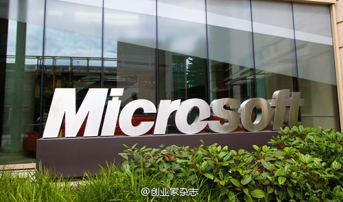

微软在很辛苦地打盗版 网页链接 //@齐小鸥: 看了原帖评论,大部分人都骂微软。我就不明白了,明知office是收费的,还用,还不想给钱,这是什么思维。别拿爱国主义做幌子,那些盗版国外软件的,实际上也在盗版国内软件。知道中国为什么没人好好写软件了吧!@创业家传媒:【招聘要求中“熟练运用office”， 引来微软查盗版】去年，微软公司从招聘网站上发现，宁波一家公司发布的招聘信息中，要求应聘者具备掌握Office等软件的应用能力，而微软在自己的数据库中查询时，没有发现该公司购买正版软件的记录。该公司为此赔了60余万元。网页链接 宁波日报 